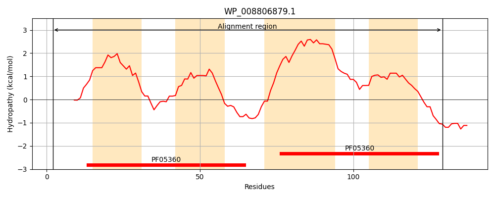
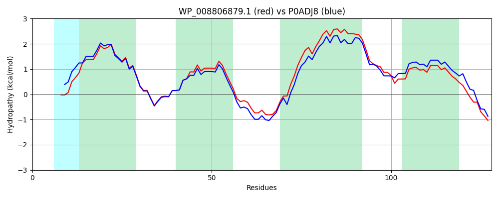

Hit Accession: P0ADJ8
Hit TCID: 9.B.44.1.1
Hit Description: gnl|BL_ORD_ID|8753 gnl|TC-DB|P0ADJ8|9.B.44.1.1 Inner membrane protein yiaA - Escherichia coli.
Mach Len: 128
e:0.000000
Query TMS Count : 4
Hit TMS Count: 4
TMS-Overlap Score: 3.750000
Predicted Substrates:None
BLAST Alignment:
Score: 579 , Bit scores: 227 bits, E-value: 4.2e-78, Alignment length: 128, Percentage identity: 83
Query: 2 MENKHATYSPAFHLISWIALIGGIVTYLVGLWNADMQLNEKGYYFAVLVLGLFAAASYQKTVRDKYEAIPTTALYYTTCLVVFVIAVGLLVIGLWNATLLLSEKGFYGLAYFLSLFGAVAVQKNVRDA 129
M+NK +TYSPAF ++SWIAL+GGIVTYL+GLWNA+MQLNEKGYYFAVLVLGLF+AASYQKTVRDKYE IPTT++YY TCL VF+I+V LL++GLWNATLLLSEKGFYGLA+FLSLFGAVAVQKN+RDA
Sbjct: 1 MDNKISTYSPAFSIVSWIALVGGIVTYLLGLWNAEMQLNEKGYYFAVLVLGLFSAASYQKTVRDKYEGIPTTSIYYMTCLTVFIISVALLMVGLWNATLLLSEKGFYGLAFFLSLFGAVAVQKNIRDA 128 | Protein Hydropathy Plots: |
|---|
|  |  |
Pairwise Alignment-Hydropathy Plot:
|
|---|
|  |